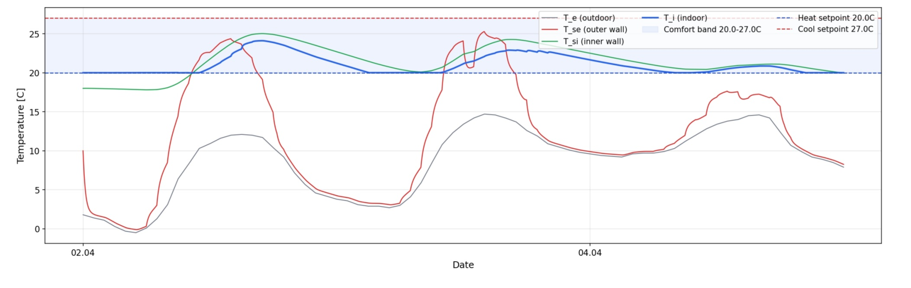

Von Monitoring
zum digitalen Zwilling.
Roadmap · EU-EPBD 2024 · Simulation · MPC
Das Prinzip
Sensoren braucht es — aber keine teuren. Unser System funktioniert mit günstiger, offener Hardware (Zigbee, Z-Wave, Raspberry Pi) und ist bewusst flexibel: es läuft als Low-Tech-Lösung genauso wie als vollständig automatisiertes System.
Monitoring liefert die Daten. Simulation liefert das Verständnis. Robotik liefert die Augen vor Ort. Das Besondere: alles läuft auf einem Raspberry Pi — Edge Computing, keine Cloud-Abhängigkeit.
Damit stärken wir den Low-Tech-Gebäudesektor: Altbauten, kommunale Gebäude, Bestandsimmobilien — Gebäude die keinen teuren HVAC-Umbau bekommen, aber trotzdem von physikalischer Simulation profitieren können. Prädiktive Heizungssteuerung als Bericht, manuell umsetzbar, ohne eine einzige neue Anlage.
Die drei Phasen
Sensoren, Alarme, Dashboard, Wärmebildkamera, Rover. Die Datenbasis für alles Weitere entsteht jetzt.
- Alarm per E-Mail und Messenger
- Incident Management System
- Autark über LTE, Hosting in Deutschland
Die EPBD 2024 macht IEQ-Monitoring und BACS-Systeme für öffentliche Gebäude zur Pflicht. Phase 2 macht kommunale Gebäude EU-rechtskonform nachweisbar.
- Vollständiges IEQ-Monitoring: Temperatur, Feuchte, CO₂, VOC
- BACS-Dokumentation nach Art. 13 EPBD
- Energieverbrauchsauswertung und Benchmarking
- Automatisierte Compliance-Reports
Messdaten allein sind Zahlen. Erst ein physikalisches Modell macht daraus Aussagen: "Hier entsteht in 5 Tagen Schimmelrisiko." Oder: "Die Heizung läuft 30 % effizienter mit prädiktiver Steuerung."
- Biohygrothermale Simulationsengine (Prototyp in Entwicklung)
- Schimmelrisiko-Prognose — dynamisch, nicht nur Schwellwerte
- MPC-Report: optimale Lüftungs- und Heizzeiten, manuell umsetzbar
- Prädiktive Steuerung für Gebäude mit HVAC-Integration
- EPBD Art. 19: digitaler Zwilling als Instrument zur Gebäudebewertung
Beispiel — Simulationsoutput rentrace

Simulierter Temperaturverlauf über 3 Tage. Außentemperatur (grau), Innentemperatur (blau), Außenwandoberfläche (rot), Innenwandoberfläche (grün). Das Modell berechnet wann die Innenoberfläche unter den Taupunkt fällt — Schimmelrisiko entsteht bevor es messbar ist.
Eingangsdaten — Wetter & Strahlung
Solarstrahlung (GHI/DNI/DHI), projizierte Wandeinstrahlung, Windgeschwindigkeit und Richtung, Außentemperatur und Taupunkt — alles fließt in die Simulation ein. Echte Wetterdaten, kein Standardklima. Läuft lokal auf dem Raspberry Pi, keine Cloud-Abhängigkeit.
EU-EPBD 2024 — Was auf Kommunen zukommt
Die Richtlinie (EU) 2024/1275 ist seit dem 28. Mai 2024 in Kraft. Umsetzungsfrist: 29. Mai 2026. Öffentliche Gebäude stehen an vorderster Front.
| Frist | Anforderung |
|---|---|
| 31.12.2024 | BACS-Pflicht für Nicht-Wohngebäude >290 kW (bereits fällig) |
| 29.05.2026 | Nationale Umsetzungsfrist EPBD 2024 |
| 31.12.2026 | Solar auf neuen öffentlichen Gebäuden >250 m² |
| 31.12.2027 | Solar auf bestehenden öffentlichen Gebäuden >2000 m² |
| 01.01.2028 | Neue öffentliche Gebäude = Nullemissionsgebäude |
| 31.12.2029 | BACS-Pflicht ausgeweitet auf Gebäude >70 kW |
| 2030 | 16 % der energetisch schlechtesten Gebäude saniert |
IEQ-Monitoring (Art. 13 Abs. 4) und digitale Zwillinge (Art. 19 Abs. 5) sind explizit in der Richtlinie verankert. Kommunen die jetzt mit Monitoring beginnen, bauen die Datenbasis auf die sie für den Compliance-Nachweis benötigen.